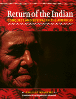

<body bgcolor="#FFFFFF" text="#000000" link="#0000FF" vlink="#CC0000" alink="#CC0000"><center><hr width="350" size="1" align="center" noshade>"After 500 years of injustice, 500 years of night, we are moving into the light of a new era for our peoples. We believe that our voices will make themselves heard, that you will listen to us."<hr width="350" size="1" align="center" noshade><p><a href="https://cdcshoppingcart.uchicago.edu/Cart/ChicagoBook.aspx?ISBN=9781566395007&&PRESS=temple" target="_top">Buy this book!</a> | <a href="https://cdcshoppingcart.uchicago.edu/Cart/Cart.aspx?PRESS=temple" target="_top">View Cart</a> | <a href="https://cdcshoppingcart.uchicago.edu/Cart/Cart.aspx?PRESS=temple" target="_top">Check Out</a></p><p></p></center><!--none//--><h1>Return of the Indian</h1>
<H2>Conquest and Revival in the Americas</H2>
<H2><!-- Foreword by Menchu, Rigoberta --></H2>
<h3>Phillip Wearne, foreword by Rigoberta Menchu</h3>
<P>cloth 1-56639-500-3 $80.50, Sep 96, <FONT COLOR=#990033>Out of Stock Unavailable</FONT>
<br>paper 1-56639-501-1 $27.95, Sep 96, <FONT COLOR=#990033>Out of Stock Unavailable</FONT>
<BR> 264 pp
7.5x9.5
68&nbsp;halftones 8&nbsp;color&nbsp;illustrations
<BR>&nbsp;<br>Restricted: For sale only in the U.S. and its dependencies and the Philippine Islands
</P><BLOCKQUOTE><I>"A great book, educational and informative. It's a must read for those who are interested in indigenous peoples issues."</I>
<BR>&#151<B>Matthew Coon Come</B>, Grand Chief of the Crees, Quebec<I></I></BLOCKQUOTE>
<p>Chronicling indigenous resistance in Latin and North America, Phillip Wearne explains the ways in which land and language are central to indigenous identity and reveals the harsh realities of discrimination and repression that persist for all indigenous peoples.
<BR>&nbsp;<h2>Reviews</h2>
<P><I>"An excellent introduction. From Canada to Chile, this book draws together for the first time the experiences and struggles of indigenous peoples of all the Americas, North and South. Phillip Wearne writes with passion and sensitivity, revealing the tragic story of colonialism, the vigorous efforts to maintain indigenous cultures in the face of aggressive policies of assimilation and, most importantly, the new movement uniting indigenous peoples across the continent." </I>
<br>&#151<b>Julian Berger</b>, author of <I>Gaia Atlas of First Peoples</I> and secretary of the UN Working Group on Indigenous Populations
<P><I>"</I>Return of the Indian <I>brings together for the first time the present condition of the forty million indigenous people of North, Central and South America. It is a long-needed work that shows the cultural diversity of the two continents as well as significant parallel historical courses." </I>
<br>&#151<b>Dee Brown</b>, author of <I>Bury My Heart at Wounded Knee</I>
<P><I>"A timely study of Latin America's indigenous peoples and the appalling problems of racism and land theft they still face, but which they are heroically resisting. Wearne's book has that increasingly rare blend of scholarship and accessibility: a fine achievement."</I>
<br>&#151<b>Robin Hanury</b>, Tenison, Survival International
<P><I>"All that is of real importance in the history of the Indian races of the Americas is contained in Philip Wearne's book, which has spread a vast net to gather so many extraordinary facts."</I>
<br>&#151<b>Norman Lewis</b>, author of <I>The Missionaries</I>
<BR>&nbsp;<h2>Contents</h2><P>
<p>List of Illustrations
<br>Books from the Latin America Bureau
<br>Foreword &#150 Rigoberta Menchú Tum, Winner of the 1992 Nobel Peace Prize
<br>Acknowledgments
<br>1. Definitions and Diversity
<br>2. Before Columbus
<br>3. Human Rights, Human Wrongs
<br>4. Land and Environment
<br>5. Assimilation and Development
<br>6. Organization and Revival
<br>Indigenous Chronology &#150 Emma Pearce
<br>Appendix 1: Indigenous Population Figures, with a political map of the Americas &#150 Emma Pearce
<br>Appendix 2: Contact Organizations Working on Indigenous Issues
<br>Further Reading
<br>Index
</P><BR>&nbsp;<H2>About the Author(s)</H2>
<P><B>Phillip Wearne</B></A> is a journalist who has lived in Mexico and Central America and traveled throughout the rest of North and South America.</P>
<BR><H2>Subject Categories</H2>
<p><A HREF="/tempress/history.html" TARGET="_top">History</a>
<BR><A HREF="/tempress/latin.html" TARGET="_top">Latin American/Caribbean Studies</a>
</p>
<p align="center"><a href="https://cdcshoppingcart.uchicago.edu/Cart/ChicagoBook.aspx?ISBN=9781566395007&&PRESS=temple" target="_top">Buy this book!</a> | <a href="https://cdcshoppingcart.uchicago.edu/Cart/Cart.aspx?PRESS=temple" target="_top">View Cart</a> | <a href="https://cdcshoppingcart.uchicago.edu/Cart/Cart.aspx?PRESS=temple" target="_top">Check Out</a></p><p><font face="Arial" size="1"><a href="copyright.html" onMouseOver="window.status='Web Copyright Policy';return true;" onMouseOut="window.status=''" title="Web Copyright Policy">&copy;</a> 2015 <a href="http://www.temple.edu" target="new" onMouseOver="window.status='Link to Temple University home page';return true;" onMouseOut="window.status=''" title="Link to Temple University home page">Temple University</a>. All Rights Reserved. http://www.temple.edu/tempress/titles/1336_reg.html</font></p>